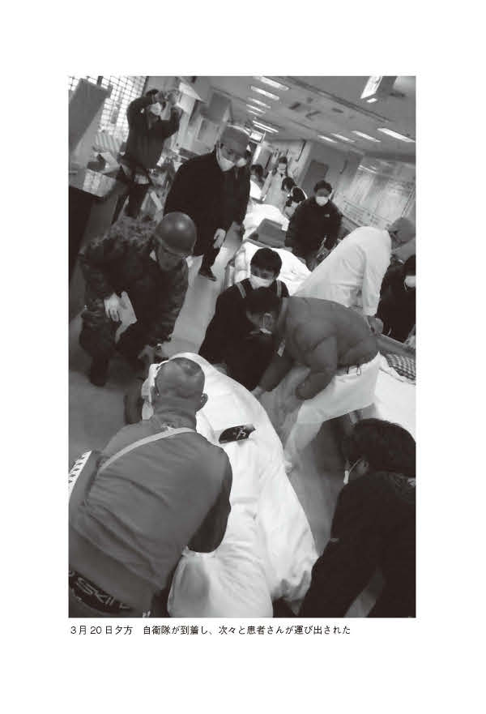
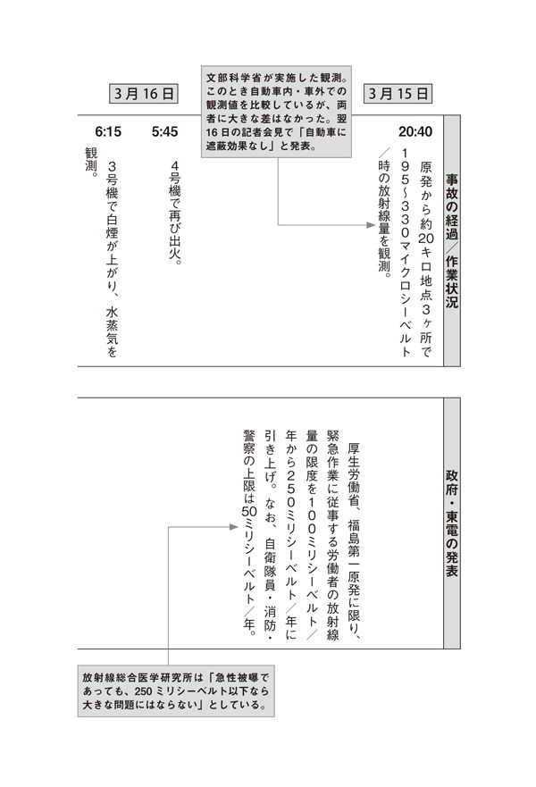
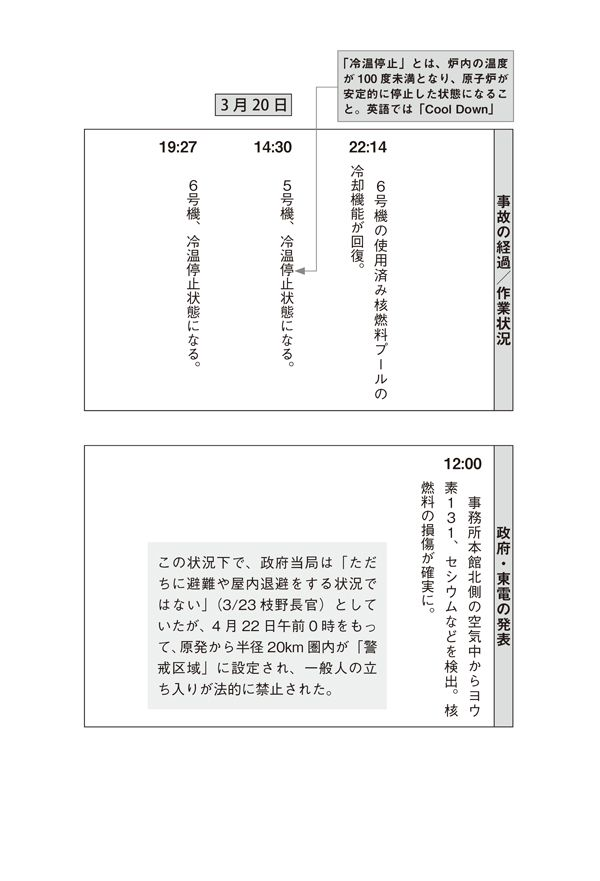

| フクシマ3．11の真実 あれから５年......誰も知らない、男たちの活動の真実！ | |
| 植田 正太郎 | |
| ゴマブックス (2011) | |
漫画 小説 一般書籍 RAW ZIP RAR 無料 ダウンロード http://13DL.NET
この本は縦書きでレイアウトされています。
また、ご覧になる機種により、表示の差が認められることがあります。
夜のとばりが周囲の景色を暗闇に変えてから、ずいぶん時間が経った。
地震発生からすでに一日以上経っていた。
真夜中だった。
その頃になると、道は大渋滞しているか、ガラガラにすいているかのどちらかになっていた。
東京から福島に向かう国道１１５号線に入って、すでに何時間も経っていた。
山を越えていくと、そこにはしんとした空気が広がっていた。
前に通ったことのある道なのに、電気がまったくついていないし、ちがう道のように感じた。
自衛隊の車や救急車のような、緊急車両をわずかに見かけるくらいで、他にはもう人っ子一人いなかった。
不思議と静かだった。
来る前のイメージでは、大震災ですべてのものが崩れてしまっているかと思っていたが、山のほうでは何か壊れているということもなく、きれいなまま。
ただ、夜中とは言え、奇妙な静けさに覆われていたことが印象的だった。
人がいないし、山も町も、生きている気配がしない。
月明かりとヘッドライトだけを頼りに走り、この道が正しいのかどうかすらわからないという不確かな感覚の中で、まるで生気が感じられない空間を進んで行った。
静かすぎる山道で、道を確認するために車を停めたとき、エンジンを切ってみた。
何も聞こえないのに、なぜだか、何かがいるようなあいまいな気配を感じて、車から降りてみた。
すると圧倒的な静寂の中で、余震が来る前には〝山の鳴き声〟が聞こえてきた。
余震のたびに、地面の底から、「ガリガリ」とか「ギリギリ」といった音が聞こえ、ガンと揺れるときにはボーリングのボールが当たるときの音のように、「ガチン」みたいな音がする。
これが地球のエネルギーなのか。自然の力なのか。
いつもは人間がつくり上げた日常にまぎれて気づかないが、地球は生きているのだ。
そして、人間の暮らしなど一瞬にして破壊してしまうほどの力を持っている。
それを、〝山の鳴き声〟が教えてくれた気がした。
何とも言えない不思議な感覚は、これから先も胸に残るだろう。
カーラジオで流れていたのは、安否確認・津波情報・余震情報が中心で、このときはまだ原発情報はなく、怖さはあまり感じていなかったことをおぼえている。
やがて、「相馬まで３km」という看板が見えてきた。
フクシマ３・11の真実 目 次
東日本大地震発生当日
東日本大地震発生から２日目
東日本大地震発生から３日目
東日本大地震発生から４日目
東日本大地震発生から５日目
東日本大地震発生から６日目
東日本大地震発生から７日目
東日本大地震発生から８日目
東日本大地震発生から９日目
東日本大地震発生から10日目
最終章
東日本大地震発生から11日目
２０１１年３月11日
14時46分18秒 東日本大震災発生
牡鹿半島の東南東約１３０kmの三陸沖、深さ約24kmを震源とするマグニチュード９・０の巨大地震が発生した。太平洋プレートが、東北地方を乗せた北米プレートの下にもぐりこむかたちで起きた海溝型地震。震源の真上にあたる海底は、地震前と比べて、約24ｍも移動した。地面が押し合うかたちでずれることで発生した逆断層型地震。震源域は岩手県沖から茨城県沖までの南北約５００km、東西約２００kmの広範囲にわたる。直後の甚大な津波の被害があり、延べ４００平方kmが浸水した。岩手県宮古市の姉吉地区では、津波の最大遡上高38・9ｍを記録。30ｍを超えた地点は、沿岸12kmにもわたる。死者１５２７０人、行方不明者８４９９人、避難生活者１０２２７３人（5月30日現在・警察庁まとめ）。死亡者の死因の９割以上が水死だった。
３月11日14時46分 大阪府大阪市──植田 正太郎
この日、わたしは大阪市北区堂島のＡＮＡクラウンプラザホテルのロビーで、14時から親戚と仕事の打ち合わせを行っていた。
打ち合わせ中、「めまいかな？」という程度の揺れを感じ、急いでロビーに出てみた。
めまいで自分が揺れているのか、地震なのか、よくわからなかった。
ちょうどそのとき、東京でわたしが経営する会社の社員・三原君から電話がかかってきて、地震であることを知った。
電話の向こう側では、ガチャガチャとひどい音がしていた。
東京にいる社員たちは、大混乱しているようで、かなり大きな地震であることが電話からも伝わってきた。
なにしろ、大阪まで揺れを感じているくらいだ。
「もしもし？......（ブツッ）あれ？」
「みんなに連絡取れてる？」
「いや、まだです......（ブツッ）......（プーップーップーッ）」
ろくな会話にならないうちに、電話は切れてしまった。しかも、そのあとでいくら電話をかけなおしても、一切つながらない。
数分おきに電話をしてみたり、メールも送ってみたのだが、まったく連絡が取れずに時間が過ぎていった。
まずはホテルのフロントで情報を取ってみた。Ｍ７・９の東北での地震（後にＭ９・０と訂正された）だというが、まだ詳しいことはわからないらしい。
心配なのは、帰りの飛行機が飛ぶのかどうかということ。もともと日帰りで東京に帰る予定だったので、関西国際空港からの最終便を押さえていた。
ＡＮＡのホテルだし、飛行機の情報は入るはずだと思うが、どうもはっきりしない。
今日のうちに帰れるのか帰れないのか、何とか確認してもらいたいが、明確な答えが返ってこない。
とりあえず、今日は大阪に泊まるつもりにしておいたほうがいいのかもしれないと思った。
３月11日14時46分 福島県相馬郡新地町──川嶋 舟
その日、わたしは単身赴任先の東京での仕事を終え、妻と娘が待つ相馬市へ帰る途中に地震に遭遇した。
仙台から相馬駅へ向かっており、あと2駅というところまで近づいた常磐線新地駅で、電車は停車していたため、乗客はパニックにこそならなかったが、かなりひどい揺れでほとんどの人が動けなかった。
新地駅は無人駅で駅員の誘導はなく、乗客はそれぞれホームに出たりそのまま電車の中に残ったりしていた。
わたしは自分と同じ車両にいた人に、「町役場まで行きますが、ご一緒にどうですか？」と声をかけた。
応じた7、8人の人たちと一緒に、徒歩で町役場に移動を始めた。
途中、余震もあったが、歩いているのであまり感じなかった。
被災して屋根瓦が落ちていたり壁が倒れたりしているところもあったが、まだそれほど混乱している様子ではない。
ただ、「これだけの大地震、津波がきてもおかしくない」とは思っていた。
３月11日14時46分 埼玉県桶川市──豊田 勝義
普段は、沖縄でのライフセービング指導をメインに活動しているわたしだが、地震が発生したときはたまたま埼玉県にある水上公園のプール監視員への教育プログラムのため、埼玉に借りているアパートにいた。
大きな揺れの後、部屋の中の物が崩れ落ちた。揺れは長く続き、やっと収まったら、次は停電だ。
もともとテレビは見ないし、停電で見ることもできなかったので、まったくまわりの状況はわからなかった。この時点では自分が一番の被災者だと思っていたくらいだ。
何人かの仲間や友人には無事を連絡しようとしたが、携帯もまったくつながらなかった。
■３月11日14時54分～16時52分にかけ、沿岸部で相次いで大規模な津波が発生。
（宮城県の気仙沼市、岩手県石釜市・宮古市などで、最大10ｍの波を観測した。）
■３月11日15時50分 福島県相馬市で7・3ｍ以上の津波が発生。
３月11日15時50分 福島県相馬郡新地町～相馬市──川嶋 舟
やっとのことで町役場に着いてしばらく様子を見てから、徒歩で実家の相馬中村神社に向かった。
一千年余りの歴史を有し、１６１１年に創建された、現在の相馬中村神社がわたしの妻の実家であり、彼女は宮司を補佐する禰宜という神職についている。
余震が何度も起きていた。町役場で声をかけたら一緒に行きたいという人が一人いたが、ほかの人は皆、避難所となった町役場に残った。
相馬のほうに向かって6号線を歩いているとき、不意に津波がやってきた。
すぐに6号線を走っている車に連れの人と一緒に乗せていただき、高台まで行った。
津波は、防波林をなぎ倒してすさまじい勢いで押し寄せてきた。
今まで見たこともない、はじめて見る光景だ。
穏やかなときには美しく雄大な海が、どす黒い凶暴な大津波となって相馬に襲いかかってきた。
ただ、家が動き、流されたりしているのをじっと見ていた。
見たという事実だけを覚えている。
そうして20分ほど歩いたところで、運よく来た空車のタクシーに乗り相馬駅に向かった。
17時前に、相馬中村神社に到着した。
本殿にはそれほど被害がないようだったが、燈篭が倒れていたり鳥居がずれていたりし、社務所の瓦も落ちていた。
何とか家族と会えて、無事が確認できた。
大変な状況ではあるが、こんなときにはかえって淡々とした気分になるから、不思議だ。
電気、水道は使え、ガスはプロパンですぐに使用できた。

３月11日17時頃 大阪府大阪市──植田 正太郎
打ち合わせを何とか終え、ホテルを出て、大阪市内で早目の夕食をとっているときだった。
お店のテレビがついていて、ニュースが流れていた。
そして、友人の川嶋さんが住む福島県相馬市が津波にのまれて、ひどいことになっていると知った。
昨年、知人の紹介で知り合った川嶋舟さんは、ちょうど相馬にいるのではなかったか。
東京農業大学農学部バイオセラピー学科講師を務め、動物介在療法の研究・教育・実践を行っている川嶋さんは、相馬中村神社の禰宜・麻紗美さんと２００６年に結婚。普段は主に東京で仕事をしていて、単身赴任生活をしている。
数日前に彼と食事をしたとき、ちょうど今日、３月11日、相馬に帰る予定だと話していたのだ。
電話を何度かかけてみたが、やはりつながらない。
今、相馬にいるんじゃないかと思うと、なぜか胸騒ぎがしてならなかった。
３月11日20時 関西国際空港──植田 正太郎
予約していた最終便は飛ぶ予定だとホテルで聞いたので、関空（関西国際空港）まで電車で向かった。
でも発着情報を伝える電光掲示板を見ていると、次々に飛行機が欠航になっていく。
東京行きの最終便は、どうか飛んでほしい......。
そんな願いも虚しく、やはり搭乗予定だった飛行機も欠航になってしまった。
情報が錯綜し、何がなんだかわからない状態だった。
空港には人があふれ、混乱していた。
搭乗予定だった人の中には、カウンターに、
「もっと早く情報を流してくれれば、ここまで来なかったのに！」
と怒鳴りつけたり激しく抗議したりする人もいた。
確かにわたしも、ホテルできちんと「欠航だ」と伝えてもらえたら、わざわざ空港に来ることもなく、今夜の宿をあらかじめ予約しておけたのに、と思ってしまった。
でも、そんなことで不満を言っても仕方がない。
文句を言われるほうも気の毒だ。
だから「わかりました」と、素直に答えるしかなかった。
振替便が出るというので、明日の朝8時の便を押さえてから大阪へ戻ることにした。
しかし宿を用意していないし、すでにまったくホテルを取ることができない状況だった。
何とかしようと、東京の社員に電話をしてみた。
大阪のホテルはどこもいっぱいだったが、社員はスカイプを使って、苦労しながらも、何とか一室確保してくれた。
結局は昼間に打ち合わせを行っていたＡＮＡクラウンプラザホテルに戻って宿泊することになった。
大阪でもこんな様子である。地震の被害を直接受けている岩手や宮城をはじめとした東北地方や、電話やメールなど通信機能も混乱し、人が密集している首都圏ではどんな状態になっているのかと、心配になった。
母は東京の家にいるはずだが、電話をかけてみてもずっとつながらなかった。
夜になってやっと１回だけつながり、ホッとするが、父は渋谷の職場からまだ帰ってきていないようだった。
神戸にいる娘の彩乃にも念のため連絡を取ったが、とくに被害は受けていないようで安心した。
こうして混乱の一日を終えた。
３月11日20時 相馬中村神社──川嶋 舟
植田さんをはじめ、いろいろな人から、安否確認のメールが来ていた。
自分たちもきっと大変なはずなのに、こんなとき、気にかけていただけるのは、本当にありがたいことだ。
こういうときに、人の温かさを感じることができると思った。
無事であることを何とか知らせたいのだが、携帯もメールもつながりが悪かった。
■20時50分 福島県対策本部より、福島第一原発１号機の半径２kmの住人（１８６４人）に避難指示が出る。
■21時23分 菅首相より、福島第一原発の半径３km圏内の避難、３～10km圏内の屋内退避の指示が発表される。
■５時44分 福島第一原発、避難区域10kmに拡大、放射線量は８倍。
■６時00分 原子力安全・保安院が会見で初めて「（福島第一原発）１号機制御室で通常の約１０００倍、正門付近で通常の約20倍」と放射性物質の漏洩を発表した。
３月12日6時 相馬中村神社──川嶋 舟
昨日の地震後から、通信機能は混乱したままで、なかなか外部との連絡手段がない。
いったいどうすればいいのか......。
ふと「公衆電話からなら通じるかもしれない」と思い立って、公衆電話の受話器を手にした。
なぜか、最初に頭に浮かんだ植田さんに、電話をしてみた。
３月12日6時 大阪府大阪市──植田 正太郎
振替便が出るという情報があったので、伊丹空港へ行った。
しかし、すでにものすごい人数の人たちが長蛇の列をつくって並んでいた。
とにかく並ばなくてははじまらないと、列に加わった。
並んで待っているときに、公衆電話から着信が入った。
こんな朝早くに誰だろうと思って出ると、川嶋さんだった。
「あー、よかった！ 連絡が取れて」
思わず安堵の声を上げた。
しかし、いつもはかわいらしいくらいに、すごく明るいはずの川嶋さんの声が、そのときは、ちょっとちがった。
震えているように感じて、これはやっぱり相馬にいるんだなと、すぐにわかった。
「川嶋さん。奥さんやお嬢さん、まわりの方たちは大丈夫ですか？」
「大丈夫、このあたりは何とか。ただ海側はひどいですよ」
「とりあえず、また連絡しますから。必ず」
「ありがとう」
少しの時間しか話せなかったが、とにかく声を聞けてよかった。
東京へ戻ったら、そのまま相馬中村神社へ行こう。
もし川嶋さんが神社にいなくても、奥さんと娘さんだけでも東京へ連れてきたほうがいい。
電話を切った瞬間、そう決めた。
■7時45分 菅首相より、福島第二原発の半径３km圏内の避難、３～10km圏内の屋内退避の指示が出た。
（第一原発、および第二原発周辺への放射性物質の漏洩が明らかになり、この時点ではじめて放射線についての深刻な事態が世界に報道された。
この後、「放射性物質から身を守るためにどうすればいいか」といった報道が活発に。具体的には「室内では窓を閉め、換気扇やエアコンを止める」「屋外ではマスクをする」「できるだけ皮膚の露出を避ける服装を」という対策が、テレビや新聞などでくり返され、放射能が全国的な関心事となっていった。）
３月12日8時頃 新大阪駅──植田 正太郎
そのまま伊丹空港で、1時間ほど長い列に並んで待ったものの、結局は飛行機が飛ばないということになった。
並んでいた人たちは一様に落胆の表情を見せ、怒りたい気持ちや途方にくれた気分を抱えながら、またそれぞれに交通手段を探しに奔走しなければならなかった。
それにしても、ここでも怒鳴っている人がいた。
こういうときに余裕がなくなってしまうとは言え、職員の人たちにあたっても意味がないのに。
わたしは、何がなんでも帰らなきゃいけないと改めて思いなおし、気持ちをすぐに切り替えて、いち早く空港を離れた。
その場にいたたくさんの怒れる人々は、あの後どうしたのだろう？
飛行機は諦め、新幹線に乗ろうとタクシーで新大阪駅へ向かった。
タクシーのラジオからは、当然のように地震のニュースばかりが流れており、運転手さんは「エライことになりましたねぇ」と言いながらも、興味本位のような他人ごとのような雰囲気だ。
そんな感じでずっとしゃべり続ける運転手さんに対して、わたしは「そうですね」と相槌を機械的に打ちながら、どうしたら、最短で、東京、そして川嶋さんのいる相馬に行けるのか？ そればかり考えていた。
実際に被災したわけではなかったが、相馬や東京をはじめとする被災地のことで頭がいっぱいだった。
到着した新大阪駅は、空港と同じくものすごい人であふれかえっており、切符売り場には長い長い列ができていた。
並んでいる人たちの背中には、一様にイライラがにじんでいた。
券売機の操作に手間取っている人がいれば、「まだか？」というように、列の後ろから前をのぞき込む。
慣れない人にとっては、切符１枚買うのだって大変なことだろうに、こんなときにはそういうことを思いやる気持ちがなくなってしまうのかもしれない。
何とか切符を買い、新幹線に飛び乗り、東京へと向かった。
運よく座ることができたのだが、落ち着かなかった。
なにかもどかしく、東京に着くまでの時間が、いつもよりずっと長く感じられて仕方がなかった。
ニュース映像で見た津波のおそろしさが何度も何度も頭によみがえってきた。
自分がこうして新幹線に乗っている間、川嶋さんはどこでどうしているのだろうか。
東京もどんな様子になっているのだろう。
昨日、家族や会社ともなかなか電話がつながらず、心配だった気持ちがよみがえってきた。
とりあえずみんな、無事であることはわかっていたものの、かなり混乱状態なのは間違いなかった。
３月12日午前 福島県相馬市──川嶋 舟
悪夢のような３月11日が過ぎ、朝がやってきた。
一千年以上続く相馬藩の伝統行事「相馬野馬追」に参加している地元の人から電話があり、津波被害を受けても馬が生きているという。
さっそく数人で助けに向かって、10頭余りを何とか救出することができた。
一部は神社に連れて来て、ほかにも受け入れてくれるところを探し、避難させた。
馬の救出の際に市内をまわったが、やはり被害状況は海側と山側とでまったくちがっていた。
地震というよりも、津波の被害を受けているか、いないかのちがいである。
地元住民の人たちの表情もさまざまだった。
津波ですべてを失っている人、床下まで津波がきたけれど家も家族も無事な人、地震被害だけの人。
自分の被災状況に応じて、目の前のことに対応していかなくてはならない。
こうした被災状況の差が、これからの大きな課題になっていくのかもしれない。
３月12日正午 東京──植田 正太郎
何度も遅延を繰り返しながら、何とかお昼ぐらいに東京に到着した。
もっと混乱しているかと思ったが、東京の街は思ったよりもずっと落ち着きを取り戻していた。
震災当日の昨日は、渋滞がすごくて交通機能が麻痺していたということだが、そんなふうには見えなかった。
目に見える被害はなく、「あれ？」と拍子抜けしてしまったほどだ。
本当に大地震が起きたのか。どうも実感がわいてこなかった。
東京は通常の姿を取り戻している感じがした。
わたしの父は、昨夜は仕事場である渋谷から世田谷の自宅まで、6時間かけて歩いて帰ったという。
それを聞くと、確かに東京のような大都市ではそういう混乱もあり得るとも思う。
大阪にいたために、今回の震災についてはどうも正しく把握することができなかった。
それだけに心配も募った。
東北、そして相馬市のある北関東はやはり大変なことになっていたようだ。
刻一刻と入ってくるニュース映像は、これまでのわたしたちの理解の範囲を超えていた。
そして、川嶋さんが今、どんな状況にあるのかを想像すると、いても立ってもいられなくなった。
東京が落ち着いているように見えても、想像を絶する苦難に直面している人たちはいる。
川嶋さんも、そんな一人なのだ。
友人の一人として、放っておいていいわけがない。
川嶋さんに、何度も電話をかけてみたがつながらなかった。
イライラが募ってくる。
メールをしても、何時間も遅れて届くらしく、使いものにならなかった。
原発の事故報道がはじまり、知人や家族には制止されたが、とにかくもう自分で相馬に行ってみようと決心していたので、すぐに出かけることにした。
３月12日15時前 東京──植田 正太郎
東京の何人かの友人に連絡した後、車で相馬に向かった。
何を持って行けばいいのかわからないし、準備をしている余裕もまったくなかったので、ほとんど何も持たないままの出発。
地震の影響でどの道が使えるかもわからないため、地図一冊だけを持った。
そういえば、もともと関西に身内が多いわたしは、阪神・淡路大震災のときも、同じように被災地に向かった。
あの時も途中のコンビニでいろいろなものを買って、車のトランクをいっぱいにしたことを思い出した。
今までにも震災の現場に向かった経験があるから、今回はなんとなく先のことが見えているような気がした。
最初のうちは足りないものだらけでも、そのうち物資は集まってくるものだ。
だから、物資よりもまず被災した人の気持ちに寄り添うことが一番大切だ。
自分が相馬まで足を運ぶことで、川嶋さんの精神的な支えに少しでもなれたらいい。
車を走らせながら、そんなことを考えていた。
どこまで道路がつながっているとか、どこで規制されているとか、何の情報もないままだったが、30kmくらいのところまで近づければ、途中で車を捨てて歩いてもいいと思っていた。
高速道路は使えなかったので、上野から国道4号線に入ったが、大渋滞だった。
持ってきた地図を片手に、この道あの道と抜け道を探して、ぐるぐると走り続けた。
■15時半頃 福島第一原発1号機が水素爆発、4名が負傷、白煙が上がった。
（この事実は２時間も隠蔽され、詳細が発表されるまでには５時間を要した。爆発が起きているという重大な事実を、原発の危険にさらされている福島県民たちは知る由もなく、避難指示圏外では、人々が大災害直後の混乱と必死に闘っていた。）
■18時25分 福島第一原発の避難指示が半径20kmに拡大された。
３月12日20時頃 栃木県宇都宮市（相馬まで１６０km）──植田 正太郎
渋滞を避け、抜け道を探しながら車を走らせ続け、何とか５時間ぐらいかかって宇都宮あたりまでたどり着いた。
そこから先の長い道のりにそなえてガソリンを入れておこうと、ガソリンスタンドを目指した。
すると、ガソリンスタンドも大渋滞で、給油待ちの車の列に1時間近くも並んだ。
やっと自分の番が来て、満タンに給油。
この先のガソリンスタンドがどうなっているのかわからないので、ガソリンを買って車に積んで行きたいと相談したところ、携行缶がないと売れないと言われた。
事情を説明し、ちょうどそのガソリンスタンドには5リットル入りの携行缶が3つあったので、それを頼み込んで売ってもらった。
計15リットルのガソリンを車に積み、また出発した。
その後、途中で見かけたガソリンスタンドもすごい混雑だった。
相馬に着くまでにもう1回だけ満タンにまで給油したが、どこも混乱ぶりは大変なものだった。
３月12日22時頃 栃木県宇都宮市──植田 正太郎
夜もすっかり暮れ、宇都宮を出て、その先へ行くと、たぶんもう食べるものがないだろうと思い、見つけたレストランで夕食を食べた。
きっと、翌日になったらそのレストランも閉まっていただろう。
店内には７、８人のお客さんがいて、テレビでは原発のニュースが流れていた。
隣のテーブルから「逃げる？」とか「離れたほうがいい」という会話が聞こえてきた。
そんな中、今から自分は、福島に向かうのだと思うと、不思議な気持ちになった。
わたしは、腹ごしらえを済ませ、再びハンドルを握った。
宇都宮からは、もうどの道路を使ったのか覚えていない。
とにかくひどい渋滞で、自分のカンだけを頼りに、「こっちをまわったら、あっちにつながりそう」という感じでぐるぐると走り続けた。
この頃になると川嶋さんから、何時間もかかったけれどメールが届くようになり、電話でも1、2回、声を聞くことができた。
何が必要なのかを問い合わせていたところ、衣類、着替えがほしいと返信がきた。
途中、コンビニを見つけるたびに寄って探してみるが、もう着替えなんか全然売っていなかった。
かろうじて残っていた靴下など、わずかなものだけでも少しずつ買った。
花粉の飛散がひどい時期で、花粉症の薬もほしがっていたのだが、これも手に入れられなかった。

３月12日深夜 栃木県宇都宮市～福島県相馬市──植田 正太郎
那須のほうに向かって山の中を通ったり、またさまよっているうちに4号線に戻ったり、よくわからないなりに郡山までたどり着いた。
相馬まであと50km。
以前、来たことのある郡山はどうなってしまっているのか、気になって町の様子を少し見てまわった。
しかし、心配したほどの被害はないようで、きれいなままに見えた。
よかった、大丈夫。
夜のとばりが周囲の景色を暗闇に変えてから、ずいぶん時間が経った。
もう真夜中だった。
その頃になると、道は大渋滞しているか、ガラガラにすいているかのどちらかになっていた。
国道１１５号線に入って山を越えていくと、しんとした空気が広がっていた。
前に通ったことのある道なのに、電気がまったくついていないし、ちがう道のように感じた。
自衛隊の車や救急車のような、緊急車両をわずかに見かけるくらいで、他にはもう人っ子一人いなかった。
不思議と静かだった。
来る前のイメージでは、大震災ですべてのものが崩れてしまっているかと思っていたが、山のほうでは何か壊れているということもなく、きれいなままだった。
ただ、夜中とは言え、奇妙な静けさに覆われていたことが印象的だった。
人がいないし、山も町も、生きている気配がしない。
月明かりとヘッドライトだけを頼りに走り、この道が正しいのかどうかすらわからないという不確かな感覚の中で、まるで生気が感じられない空間を進んで行った。
静かすぎる山道で、道を確認するために車を停めたとき、エンジンを切ってみた。
何も聞こえないのに、なぜだか、何かがいるようなあいまいな気配を感じて、車から降りてみた。
すると圧倒的な静寂の中で、余震が来る前には〝山の鳴き声〟が聞こえてきた。
余震のたびに、地面の底から、「ガリガリ」とか「ギリギリ」といった音が聞こえ、ガンと揺れるときにはボーリングのボールが当たるときの音のように、「ガチン」みたいな音がした。
これが地球のエネルギーなのか。自然の力なのか。
いつもは人間がつくり上げた日常にまぎれて気づかないが、地球は生きているのだ。
そして、人間の暮らしなど一瞬にして破壊してしまうほどの力を持っている。
それを、〝山の鳴き声〟が教えてくれた気がした。
この、何とも言えない不思議な感覚は、これから先も胸に残るだろう。
カーラジオで流れていたのは、安否確認・津波情報・余震情報が中心で、このときはまだ、原発情報はなく、怖さはあまり感じていなかった。
やがて、「相馬まで３km」という看板が見えた。
「あー、やっとここまでたどり着いた」
「これで何とか、相馬まで行くことができる！」
と、ホッとした気分になった。
そこまで近づいても、民家は崩れていないし、大地震の直後のイメージがない。
ちょっと壁が倒れているというのはあったけれど、阪神・淡路大震災の記憶からすると、「あれ？ この程度？」というくらいだった。
実はこのときの第一印象はまだ、かなり楽観的なものだったのだ。
３月13日明け方 相馬中村神社──植田 正太郎
明け方、相馬中村神社にやっと着いた。
車の中で少し仮眠を取ってから、わたしは外に出た。
人の気配を感じ、ふりむくと、そこには、心配でたまらなかった川嶋さんが立っていた。
「あー、会えた。本当に無事でよかった」
何度も川嶋さんの手を握った。
ここまでたどり着けるという確信はないまま、ただ「川嶋さんを放っておけない」という気持ちだけで、道を探しながら進んできた。
途中で大渋滞に巻き込まれ、ガソリンを入れる苦労を経験し、被災状況を心配し、〝山の鳴き声〟を聞いた。
何もかもが日常とはかけ離れた雰囲気の中で、夢中でハンドルを握っていることに、不安をまったく感じなかったわけではなかった。
それでも、どうしても相馬に行かなくてはと思っていた。
今、握手をしているのは、まぎれもなく川嶋さんだ。会うことができたのだ！
いつもとはちがって、ちょっとやつれている感じはするが、彼の元気な姿を自分の目で確かめることができて、本当によかった。
本当に、本当に、会うことができてよかった！
川嶋さんのほうは、当たり前だが「ありがとう」とか「嬉しい」というような余裕はなさそうだった。
これだけの震災の当事者なのだから、無理もないことだ。
いつも笑顔の川嶋さんが、ちょっと厳しい表情で、
「神社のほうは電気もガスも大丈夫だけれど、海側はすべて壊滅状態なんです」
と教えてくれた。
以前、川嶋さんと2人で風呂に入り、夜中まで酒を酌み交わした思い出の旅館「晴風荘」の場所にも行ってみたが、そこも、大きな被害を受けていた。
海鮮料理がおいしく、海際に建つ眺めのいい旅館だった。
被災地って、みんな一緒なんじゃないのか？
確かに津波での被害状況がすごいとは聞いていたけれど、海側と山側とでそんなにちがうものなのか？
はじめはピンとこなかったのだけれども、自分の目で海側の光景を確かめたときに、そのあまりのちがいに言葉を失った。
もうあたり一面泥だらけで、瓦礫もすごいが、まだ水が残っているのでドロドロの状態だ。
本当に何にもなくなってしまっていた。
ここに、以前は本当に人の生活の場があったとは思えない。
一面、泥と水となぎ倒された木だけで、重いはずのテトラポットがいくつもいくつも、数百メートルも陸側に流されていた。
ニュースで見て、大変な被害だとはわかっていたつもりだが、実際に見ると感覚が麻痺してしまうくらいの何倍ものショックを受けた。
このすさまじさを伝えたい─。
せめて、誰かにこの悲惨な状況を伝えたいと、知人に写メを送った。
携帯で撮った写真なんて、この圧倒的な破壊の様子を大して伝えてくれないだろう。
そう思うと、もどかしく悔しかった。
それでも、撮らずにはいられなかった。
一瞬にして何もなくなるとはどういうことなのか、はじめて実感した。
３月13日明け方 相馬中村神社──川嶋 舟
３日目の朝がやってきた。
窓の外を何気なく見ていると、なんだか見たことのある車が停まっていた。
近づいてみると、なんとあの植田さんがいた。
まさか本当に東京から駆けつけてくれるなんて。
東京にいて当たり前の人が、わざわざ被災地に飛び込んで来てくれるなんて、想像もしていなかった。
確かに電話やメールで気づかってくれていたが、まさか来てくれるとは。
混乱の中の意外な再会で、わたしはまだ感謝を十分に伝えられないでいた。
そんな驚きと同時に、もうひとつ感じたことがある。
地震からまだ丸２日も経っていないけれど、東京から相馬へ来られるということだ。
高速道路は通行止めになっていたが、道路はちゃんとつながっているんだと思った。
行こうと思えば、東京まで半日で行けるのだ。
それを植田さんが証明してくれた。
この混乱の中だからこそ、東京に行けることで、相馬のためにできることがあるんじゃないか。
■８時９分 官房長官会見で「双葉町の住民に被曝の可能性」と発表された。
（「被曝」という聞きなれない言葉に、福島だけでなく全国の国民がショックを受け、混乱状態になった。放射能にさらされる「被曝」と、原爆のように爆撃を受ける「被爆」とのちがいがわかりにくく、さらされた放射能の量も正しく理解できないといったことから、憶測が飛びかった。）
３月13日12時頃 相馬中村神社──植田 正太郎
相馬に到着して、数時間が過ぎていた。
川嶋さんと相馬市内をまわってみて、ここでじっとしていても意味がないと確信した。
すぐに川嶋さんに、「ご家族も連れて、とにかくいったん東京へ行こう。ただ、道路の渋滞もすごいことになっているから、すぐに出よう」と提案した。
しかし、川嶋さんの奥さんは神社の神職にあり、動くわけにはいかないという。
心から助けたいと思っていても、それができないというジレンマを味わった。
仕方がないので、3日以内に必ず相馬に戻ってくるという約束で、とりあえず川嶋さんだけを東京へ連れて行くことにした。
川嶋さんは、こんな状況の中、避難のためではなく、相馬を救援・支援するために東京でできることをやろうと決心していた。
奥さんには「行ってきます」と、お嬢さんには「必ず戻ってくるからね」と言って出発した。
川嶋さんは使命感を持って東京に行くことを決めたのだろうが、やはり奥さんと娘さんを残して行くことはつらいにちがいなかった。
なんと言っても被災している当事者なのだから。
車の中では、緊張の糸が一瞬切れたのか、川嶋さんは助手席で熟睡していた。かなり疲れている様子だった。
さあ、これからどうしよう。
物資にしろ人手にしろ、とにかくいろいろと集める手配をしないと、東京へ行く意味がない。
宇都宮あたりまで戻ったところで、携帯がだいぶ使えるようになっていたので、いろんな人に支援の協力を依頼する電話をかけた。
川嶋さんは学習院高等科・麻布大学を卒業後、獣医師免許を取得。東京大学大学院でも獣医学を専攻した。
獣医師の目線からか、これから液体ハミガキやウェットティッシュ、おしめなどが必要になるだろうと予測を立てていた。
そういう、集めたいものをたくさんの人にお願いした。
物資だけでなく、人手も必要だ。
そうだ。人命救助の専門家、ライフセーバーの人たちの力を借りたい。
直感でそう思った。
3年ほど前に知人の紹介で知り合った、ライフセーバーの豊田さんに連絡を取ることを真っ先に思いついた。
豊田さんとは出会った当初から、自然災害が多いこの日本で、災害時の救援のために、理想的なプログラムをつくりたいと語り合ってきた仲だった。
ライフガード歴30年で、本場オーストラリアでライフセービングの指導員資格を取得した豊田さんなら、強い味方になってくれそうだった。
埼玉までたどり着いて、牛丼を食べた。
車でほんの数時間走ったところでは牛丼を食べられるなんて、ちょっと不思議な気分だ。
相馬ではちょうどこの頃、お金はほとんど意味を持っていなかった。
でもここでは、お金さえ出せばご飯を食べることができる。
そんないつもなら当たり前のことが、まるで特別なことのように感じられた。
でも、本当はこちらのほうが日常なのだ。
現実に戻ってこられたような気がしながらも、食べながら川嶋さんと話し合ったのは、やはり「相馬のために何ができるか」ということだった。
どうしよう、これから何をしよう、何が必要になってくるだろう。
川嶋さんと2人でいろいろと考えた。
ひとつはっきりしているのは、カウンセリングをする人が必要だということ。
今回の震災では、被害状況に格差があり過ぎる。
津波の被害を受けた人と受けなかった人とでは、まったくちがうのだ。
また、原発からどのくらい離れた場所に住んでいるのかでも、避難するかしないかや、放射能汚染の風評により誤解されるか否かもちがってくる。
花粉がひどく飛ぶ時期で、2人とも目を真っ赤にしながら、長い時間、今後の見通しや目標を話し合った。
相馬に行こうと決めたときは、川嶋さんが心配だという単純な思いだけだった。
ご家族の方を一緒に連れて避難させようとか、せいぜいご近所の方たちの力になりたいという気持ちで相馬に向かったはずだ。
でも、相馬の壊滅的な状況を見てしまったから、それだけでは済まなくなってしまった。
正直なところ、見なければよかったとも思ったりした。
津波で何もかもが失われた町。
原発のニュースも不安を煽る。
もう、川嶋さんを助ければいいというレベルではなくなっていた。
被災地の実態がどんなに悲惨なことになっているかを知ってしまったからには、できる限り支援のために動くしかない。
３月13日12時頃 相馬中村神社──川嶋 舟
妻と娘に、3日以内に戻ることを約束し、植田さんが乗ってきてくれた車で、一緒に東京へ向かった。
道中、いろんな被災地を見た。
相馬を発つ前に、以前から面識のある相馬市長の立谷秀清さんに会ってきた。
市長の目下の要望は、とにかく足りないものだらけだから、人的支援があればありがたいということだった。
わたしは東京へ行くことと、支援のためにできることをしたい旨を伝え、立谷市長の理解を得ていた。
その間にも植田さんがあちこちに電話をかけて、支援の協力をあおいでくれている。
わたしはできる限り多くの人たちと連携をして、相馬の支援に尽力するつもりだが、植田さんは人的支援の部分でも大きな助けをいただける人だと思った。
３月13日午後 埼玉県桶川市──豊田 勝義
余震が続く中、これからどうなるのだろうという不安な思いで部屋にいると旧知の植田さんから電話が入った。
「テレビ見ていますか？ 福島が大変なことになっていて、とにかく人手が必要なので、ライフセーバーの人たちの力を借りたいんだけど、20人くらい集められますか？」
地震の翌日に電気が回復して、テレビを見られるようになってから、想像を絶する被害に「何かできないか？」と悶々としていたところだった。
植田さんから連絡をもらって、なんとしても行かなければと思った。
20人集められるかはわからないが、とにかく集められるだけ集めてみよう。
ただ、原発のことと、通行止めと聞いていたのでどうやって行くのかという２点を質問した。
交通手段は、高速道路を通行できる車両を手配するという。
原発に関しては、現時点では正直わからないので判断に任せると言われた。
相馬は原発から離れているので、とにかく自分自身は行こうと決めた。
あとは、どれだけ人を集められるかだ。
まず、沖縄でウォーターパトロールシステムの代表を務めている音野太志を思い出し、連絡を取ると、すぐに「行きたい」と言ってくれた。
もう１人、広島で大学の教員をやっている國木孝治に電話をすると、彼は電話を取った瞬間に「行きます！」と。
何のことかも、どこに行くのかも説明していないのに、である。
國木のその力強い言葉が、僕にとっての後押しとなった。
他に、静岡で小学校の先生をしている池田貞夫、新宿で公園管理をしている横井活水にも連絡を取った。この２人も、後から合流してくれた。
３月13日23時頃 東京──植田 正太郎
相馬に戻ると約束をした時間が迫っていた。
いろいろな方に支援のお願いをしたものの、やはり実際に親身になって動いてくださる人は1割程度というのが現実だった。
そんな中で、コーセー化粧品の小林一俊社長は、何も言わずにすぐにアメニティセットを３０００個と支援金を出してくださった。
しかも、東京に戻ってお礼にうかがおうとしていたわたしたちに対して、「お礼なんてどうでもいい。彼らは疲れているに決まっているからとにかく休ませなさい」と、ホテルの部屋をとろうとまでしてくださった。
結局は泊めていただくことはなかったが、きっとご自身の会社も大変な中、気づかっていただけたことが本当に嬉しかった。

■11時１分 福島第一原発３号機で突如水素爆発が発生。
（爆発音は２回にわたり、水素爆発特有の白い煙とは別に灰褐色の煙が高くあがったと発表された。３号機の建物外壁がなくなり、骨組みのみとなっている模様。半径20km圏内屋内退避指示。いよいよ本格的な爆発が発生した。
すでに避難指示が出ている20km圏内の住民たちの中にも、「車にガソリンがないので逃げられない」、「どこへ行けばいいのかわからない」と、避難したくてもできない人たちがいた。
また、首都圏でも、多くの企業が自宅待機指示を出したり、当面の生活用品、食料を買い占め、外出も控える人々が続出したりと、大きな混乱になった。）
３月14日 東京──植田 正太郎
首都圏の物不足もあいまってか、本当に何もかもが足りなくて、苦しい。
集めても集めても、まだ足りない。
そんな最中、みなさんからいただいた物資・支援金は、涙が出そうなほどありがたかった。
■17時00分 東電が計画停電を開始
（首都圏では、地域を5グループに分けて輪番停電を始めた。電車の本数が減り、工場の操業や店舗営業にも大きく影響した。
停電に備えて、電池等の在庫が底をつく店が続出し、ローソクも売り切れ状態に。停電中には料理ができないため、もともと震災後に保存食として売れ、品薄状態だったカップ麺等は需要に追いつかず、店頭から姿を消した。）
物不足、売り切れの混乱の中、五反田のレストラン「Ｎｅ Ｑｕｉｔｔｅｚ Ｐａｓ」（ヌキテパ）のシェフ･田辺年男さんは、ご自分のレストランも大変だったのにパンを４００個ほど用意してくださった。
従業員の方たちが総出で探しまわってくださり、東京でも物が不足している最中に、これほどの量の物資を集めていただいたことに本当に感激した。
また、スタッフのみなさんのメッセージと支援金をくださった。
実業家で世界的にも社会活動に熱心な山野エミールさんは、「とにかくすぐにおいで」と呼んでくださって、真っ先に支援金をくださり、なんでも相談に乗るとも言ってくださった。
実際、お金も必要となってきていたので、本当に助かった。
きちんと封筒に入った支援金で、ありがたすぎて、封を開けることができなかった。
山野さんは群馬県の水上にも家があり、行政と協力して被災者支援のための話を進めているとおっしゃっていた（後日、被災者受け入れを実施）。
他にも歌手の原田悠里さんが、坂本冬美さんや藤あや子さんに声をかけ、毛布などを集めてくださった。
おそらく、お金もだいぶ使ってくださったと思う。
俳優の今井雅之さんは、元自衛隊員なのでいろんな情報を集めてくださり、お忙しい中で一日に何度も電話をしてくださった。
そして放射能についての情報も教えてくださった。
加えて、「いつでも自分も行くから」という、ありがたい励ましの言葉もかけていただいた。
「車の運転だけでもするから、植田さんは助手席で寝ていればいいよ」
という言葉に、彼の熱い気持ちが伝わってきた。
口だけではなく、本当に動いてくれることがわかった。
物資集めや仕分け作業を積極的に手伝ってくださった、友人の青山貞凡さん。
熱心に話を聞き、励ましてくださったスイートベイジルの尼崎勝士社長、音楽プロデューサーのリチャード中野大輔氏、写真家の山岸伸先生、指揮者の中川謙人さん、菅原寛さんなど、多くの方に精神的にとても救われた。
セーラー万年筆の中島義雄社長からは、被災地の子どもたちのためにボールペン等の筆記用具をご提供いただいた。
ほかにも「Ｌｅ Ｇａｕｌｏｉｓ」（ル ゴロワ）の大塚敬子さん、ロイヤルゼリーのＹｏｓｈｉ山口さん......。
たくさんの方たちの想いが集まってきて、ここでは表現しきれないくらい、感謝の気持ちでいっぱいだった。
「行くな」と言ってくれる人もたくさんいた。
原発の心配が世の中に蔓延しはじめ、行くなら防護服を着ろとか、着たものを脱いでビニール袋に入れて捨てろとか、みんないろいろと気づかってくださった。
ＳＴＣ外岡秀和代表が、常日頃から危機管理の重要性を説かれていた意味がよくわかる。
心配してくれる人たちがたくさんいることが嬉しかった。
でも、相馬を発つときに「3日で帰ってくる」と約束していた。
あの悲惨な町の様子を、もう見てしまったのだから、何もしないわけにはいかない。行くしかない。
物資は、一日でトラック3台分ほどを用意できた。
特別許可証の手配も何とかできたので、高速道路の使用も可能になった。
■21時3分 官房長官会見「最悪の状態を想定しても、チェルノブイリにはならない」と発言。
（チェルノブイリが過去最大の原発事故という認識はあるものの、その事故の詳細について理解している日本人は少ない。それゆえ、比較しても現在の状況を正しく把握できるというわけではなく、実際はどれほどの規模の事故なのか、どれくらい危険なのか、大多数の国民は当時認知しきれていなかった。）
■６時頃 ２号機の圧力抑制室付近で爆発。
■８時半頃 福島第一原発正門付近で８２１７マイクロシーベルト/ｈの計測結果が発表された。
■11時頃 福島第一原発２号機３号機付近で最大４００ミリシーベルト/ｈの計測結果（１ミリシーベルトは１０００マイクロシーベルトに相当）が発表された。
（次々と起こる爆発、そしてどんどん増える放射線物質の数値。この頃から週刊誌では、「すでに原発は危機的状況にあり、日本は危険地帯」と匂わせるエキセントリックな見出しがおどり、インターネットでも「政府は真実を隠している」といった激しい論調が目立ってきていた。テレビで解説する専門家の言葉はわかりにくく、信頼もできないといった見方が増えてきて、国民の不安は募るばかりであった。）
３月15日昼過ぎ 東京──豊田 勝義
相馬に向かう日がやってきた。
地震から４日が過ぎたこの日は、呼びかけにこころよく応じてくれた、ライフセーバー仲間の音野と國木が来てくれる日だった。
まず植田さんと上野で待ち合わせをして、沖縄から飛行機で来る音野を羽田まで迎えに行った。國木は夜に新幹線で着く予定だということだ。
音野をピックアップした後、植田さんに同行して向かったのは、日暮里にあるＮＰＯ法人だった。
川嶋さんが以前から関わっていて、今回、物資を集める拠点にしていただいているそうだ。
川嶋さんとはまだお会いしていないが、植田さんが支援活動をはじめるきっかけとなった人だ。
ぜひ早く話が聞きたいと思った。
植田さんはすぐにまた、物資を取りに渋谷へ向かった。本当に忙しく動き回っている。
これからどんな活動をするのかはまだ具体的ではないが、植田さんの忙しそうな様子を見ると、少しでも人手がほしいのは間違いなかった。
力になっていきたいと、改めて思った。
３月15日夕方 東京──植田 正太郎
物資をいただきに出向いていた渋谷から日暮里に戻り、今日来てくれた豊田さんと音野さんに、川嶋さんを紹介した。
広島から来てくれる國木さんも後から合流する予定と聞いていた。
急なお願いだったのに、豊田さんは信頼できる人を連れてきてくださった。
本当にありがとう。
わたしの車に一緒に乗って、相馬に行こうとしてくださった人もいた。
実際に行動してくれようという気持ちが嬉しかった。
ただ、残り時間でまだ少しでも多くの物資を集めたいので、これからさらに駆けまわらなければならなかった。
わたしはそれを済ませてから、自分の車で相馬に向かうつもりだった。
川嶋さん、豊田さん、音野さん、後からくる國木さんには先に出発してもらって、東北自動車道の安達太良サービスエリアで落ち合うことにした。
３月15日18時過ぎ 東京──豊田 勝義
17時半頃、広島から國木がやって来た。
これで人数がそろい、みんなで一緒に相馬へ向けて出発した。
特別許可証をいただいていたので、一般車がまったく走っていない高速道路が使えて、順調に進んだ。
川嶋さんは地元とのつながりが深いので、多方面と協力関係にあり、同じチームの一員として表立って協力してもらうことはできないとのことだった。
しかし、ライフセーバーの仲間たちと植田さんとで、団結してとにかく行動していこうと思った。
埼玉や栃木など、途中のインターチェンジで降りて物資を補充しながら北上していった。
３月15日深夜 安達太良サービスエリア──川嶋 舟
あっという間に一日が過ぎていくが、今はやるべきことを淡々とやっていくしかない。
スムーズにことが運んだのかどうかはわからないが、その結果、相馬を出て2日後に、また相馬に戻ることができた。
準備できたのは、トラック１台、大型車とバンがそれぞれ１台。
すべての車に物資を積み込んで、相馬に向かった。
３月16日明け方 安達太良サービスエリア──植田 正太郎
15日の深夜に東京を出発し、安達太良サービスエリアに向う途中、ロサンゼルスにいるトム工藤さんにも電話をかけた。
トムさんは、アメリカでメディアプロデューサーとして活躍しており、わたしのお兄さんのような存在の方だ。
トムさんからは、「渡辺謙さん、小山薫堂さんらと『ｋｉｚｕｎａ３１１』を立ち上げ、日本はもちろんアメリカの一般人から著名人まで集め映像メッセージを集める活動を始めた」という話を聞かされた。
海外からも、物資だけでなく、心のサポートをする動きが始まっているということを知った。
心のサポートについては、わたしも震災翌日から川嶋さんと話していたこともあり、とても共感を持てた。
後日、渡辺謙さんからは、「人間が持っている本当のポテンシャルと人間性が問われているのだと思います。こちらも映画の準備に入りましたが、並行して支援の準備も進めています......正太郎くん、ご苦労様」という励ましのメールをいただいた。
本当に、嬉しかった。
明け方、待ち合わせ場所の安達太良サービスエリアまでたどり着いた。
まだうす暗い中、雪がパウダーシュガーのように美しく山をおおう風景が印象的だった。
自然はこんなにも美しいのに、この山を越えた向こうは、同じ自然によって徹底的に破壊されたのだ。
自然の偉大さや人間の無力さを考えさせられる。
ここで先に来ていた豊田さんたち4人と合流できた。
「急な話なのに、来てくれてありがとう」
「何言ってるんですか。逆に機会を与えてくれて感謝します」
と、みんな口々に答えてくれた。
放射能のことも「すべて自己責任です」と、迷いなく言い切った。
なんて心強い人たちだろう。
こんな仲間に出会えて、わたしは幸運だ。
実際に来てくれた姿を見て、ただただ感激した。
普通、電話で呼ばれてすぐに高い交通費をかけてまで、来てはくれない。
しかし、自分の声かけに応じて集まってくれた人たちを、やはり放射能の危険にさらすわけにはいかない。かといって防護服もない。
せめてマスクや手袋で、気をつけてもらわなくてはならない。
自分が少しでもこの仲間を守らなくては！
そんな使命感が身体にみなぎるのに、相手は見ることも触ることもできない放射能だから、守りようがない。
いったいどうやって守ればいいのかという葛藤に、悩まされた。
３月16日６時頃 相馬中村神社──植田 正太郎
朝6時に相馬に到着した。
約束通り3日以内に戻ってくることができた。
みんなで相馬中村神社で朝ごはんをいただいて、東京から運んできた物資を下ろした。
これからわたしたちの支援活動の拠点となってくれる相馬中村神社だ。
集めてきた救援物資は、ここに運び込ませていただくことになった。
さあ、ここから、できることを一つずつやっていこう。
まずは、仕分け作業だ。

３月16日午前 福島県相馬市──川嶋 舟
みなさんと一緒に朝食を終えると、すぐに植田さんが集めてくれた人たちへの宿泊をはじめ、相馬中村神社を活動の拠点にしてもらえるよう手配した。
植田さん以外の人たちとも、相馬支援のためにさまざまな協力体制をつくっているのだが、駆けつけてくれた植田さんたちのチームにも、場所を提供することで協力していきたいと考えていた。
相馬に戻ってきて、もう一度立谷市長とお話しさせていただいた。
支援物資が届きはじめてはいるが、足りているような足りていないような、うまく回っていない感じ。
地元のいろいろな人と連携するために動く中で、植田さんたちとも必要なときには連絡を取り合おうと思った。
３月16日午前 相馬中村神社──豊田 勝義
相馬中村神社では忠霊塔が倒れているなど、確かに地震の爪あとを感じたが、ライフラインも整ってきており、灯油もあってストーブがついていたので、それほどすごい場所に来たという実感はなかった。
神社で運んできた物資を荷下ろしし、仕分け作業に入った。
仕分けが済んだものから市役所に運ぶのだが、まだまだ物資は足りていないようだった。
川嶋さんの奥さんの案内で海側に出てみた。
国道を越えた瞬間に、想像を絶する世界が広がっていて言葉を失った。
松川浦漁港は壊滅していた。
数百メートルも流されてきたと思われる大きな船舶が、住宅地だったところや道路、田畑に乗り上げていた。
海から１km以上も離れていたはずの家が流され、水没し、田園だった場所は、瓦礫と水で埋め尽くされ、ヘドロ臭が立ち込めていた。
視察している間、ビニールシートで包まれていたお２人の方のご遺体を目にした。
ライフセーバーという職業柄、海についての知識は持ち合わせているつもりだ。
津波についても、学ぶ機会はこれまでにいろいろとあった。
15年ほど前に岩手県の三陸町（現･大船渡市）で、明治の三陸大津波から１００周年のイベントがあり、基調講演をやらせてもらったこともある。
そこで津波の体験者の話を聞いたり、津波の映像を見たり、かなり学んだつもりでいた。
一般的に津波の速さは、全力疾走を続ければ逃げられるくらいだと聞いていたが、実際には想像を絶する速さだったと聞いて驚いた。
３月16日昼前 福島県相馬市──植田 正太郎
翌日、相馬での活動を豊田さんたちに任せると、再び東京へ向かった。
途中、目に入る破壊された風景。
これから、本物の地獄がはじまるような気がした。
１１５号線を30分くらい走った道の途中で、ちょっとした売店とトイレの設備がある小さなパーキングエリアのようなところに車を停めた。
トイレを借りようとしたが、水が出ないので使用禁止になっていた。
諦めて帰ろうとしたとき、駐車場に車を停めて寝泊りしている家族に気づいた。
年配の男性と、娘さんとお孫さんの３人のようだ。
他にもコンビニ等の駐車場で、家の崩壊を心配して車で寝ている人たちをたくさん見て来た。
ここにいる人たちも、家が怖いのだろう。
「こんにちは」と声をかけてみたら、わたしの車にあった特別許可証を見て、「物資を届けにいらしたんですか？」と聞いてきた。
「そうです」と答えると、助けは来ないのかと不安で眠れない、携帯電話の緊急地震速報の警告音が鳴るたびに震えている、と訴えかけてこられた。
そんな人たちを助けることこそ、わたしたちがここへ来た意味なのだと改めて感じた。
「みんな見放していないですよ！」
わたしがそう言うと、安心したのか、みんな泣き出した。
実際に被災した人の生の声だった。
やはり津波がトラウマになっている子どもたちは多いのだろう。
お風呂で湯船のお湯がちゃぽちゃぽ揺れるだけで、泣き出してしまうようなことがあるそうだ。
この人たちのように、情報が乏しくて見放されたような不安な気持ちになっている人は、たくさんいるにちがいない。
わたしの励ましが、ただの口先だけにならないようにしなくては。
３月16日午後 福島県相馬市──豊田 勝義
昼前、植田さんはさらなる物資を集めに、再び東京へ向かった。
これからわたしたちが自主的に動いていかなくてはいけない。
ただ、市役所へ行き、ボランティア登録をして、
「何かやることはありますか？」
と、うかがっても、まだ市側も何をやらせていいのかわからないような状況のようだった。
ボランティアは、地元の人は何人かいたが、県外から来ている人は、自分たち以外にはまだいなかった。
とりあえず、市役所前の体育館のような建物で、物資をまとめる手伝いをすることにした。
しかし、ここも人が余っているような状態で、やることがなくなってしまったので、駐車場を行き来する車の駐車整理。
これでいいのかと疑問に思いながらも、何をしていいのかわからない状態が続いた。
３月17日 福島県相馬市──豊田 勝義
この日は一日中、市内14ヶ所に点在する避難所をまわり、避難生活を強いられている方々にお話をうかがった。
お孫さんに、高台に連れて行かれて助かったおばあちゃん。
しかし、お孫さんのほうは、その直後に流されてしまったという。
やはり、海に近い場所でも高いところに逃げられれば助かることができた。
逆に、海から離れていても流されることもある。
家族を６人亡くされ、２人はまだ行方不明だという方、火葬場がいっぱいで、亡くなった家族を火葬にできないという方、骨壷がないという方もおられた。
自分たちにできることは何かを考えさせられた。
３月17日17時 相馬中村神社──植田 正太郎
東京からの２回目の物資を積んで、また相馬中村神社に戻って来た。
荷下ろしをしていたときに、近所に住む人が神社にやって来た。
たぶん、物資を取りに来られていたのだと思う。
その男性は福島第一原発１号機で働いていらっしゃったそうなので、声をかけてみた。
わたしは原発についての知識がないので、「タービンって何？」「どうして冷やさなきゃいけないの？」という疑問があり、いろいろと教えてもらいたかった。
聞いてみると、丁寧に教えてくださった。
福島には、原発に関わって生活してきた人たちがたくさんいて、原発にすごく詳しいんだということを実感した。
そして、「放射能はやはり人体に影響を与える危険なものだ」ということもよくわかった。
その後、夕食のカップラーメンを食べてからまたすぐ東京へ向かった。
物資の援助も必要だが、これから救援活動を長く続けていくためには、理屈抜きでお金がないと何もできない。
この先長く活動をしていくためにどうしたらいいだろうと心配でならなかった。
わたしは東京に戻っていろいろな方に相談することにした。
３月18日10時 相馬市役所──植田 正太郎
相馬に戻ってきた。この６日間で４回目の相馬だ。
物資を積んだトラックと、同じ頃に到着した。
相馬中村神社で荷下ろし、仕分け作業をした。
その後、ともに支援活動をしてきた川嶋さん、豊田さん、國木さん、音野さんに加えて、相馬藩主の末裔である相馬行胤氏も一緒に、6人で相馬市の立谷市長に会いに行った。
相馬さんは地元の人たちから「若」と呼ばれ、現在でも心情的には相馬藩の殿様として人々から大変慕われている方だ。
無論、「若」も、今回の被災状況に、心を痛められ、いち早く支援活動を行われているお一人である。
われわれ６人は、市長室にお邪魔すると立谷市長から現在の大変な状況をうかがった。
「君たちは、いい顔をしている。君たちならできるかもしれない。私の直属のチームになって、一番キツイところへ行ってもらえないか」と、われわれ６人に向かって立谷市長はおっしゃった。
「わかりました」と答えると、わたしたちは、いったん市長室を出た。
隣の南相馬市にある大町病院へ行ってほしいとの指示だった。
南相馬市はもともと、1市2町が合併してできており、原発から20km圏内と20～30km圏、30km以上と、大きく3つに分かれる。
そのため南相馬市の桜井勝延市長は、市全体のことを考えて、強制避難の20km圏内以外の地域には自主避難を呼びかけていた。
立谷市長の話によれば、大町病院は原発から25kmという場所にあり、病院スタッフのかなりの数が自主避難してしまい、今は医師と看護師を合わせても17人くらいしか残っていないという。
しかし、入院患者は１８０人ほどが取り残されているということだった。
相馬市の立谷市長は、自身が医師でもあるのでこの状態を憂慮し、隣の市ではあるが救援が必要だと判断されたのだろう。
誰もまだ行っていない一番キツイ場所。
放射能を怖くないといったら嘘になる。
きっとみんなだってそうだ。
仲間の安全についても、わたしには責任がある。
15分程考えたところで、わたしは市長室に入り、立谷市長にお願いをした。
「市長と直接ご連絡が取れるホットラインをつないでくれないでしょうか」
「わかった。そうしましょう」
そこで、われわれのチームと市長とのホットラインをつなぐということになり、市長と秘書の方の連絡先をいただいた。
これでいつでも市長と連絡を取ることができ、指示をあおげる環境が整った。
そして、取り残された患者さんたちと数少ないスタッフを助けるために、さっそく大町病院へ向かうことになった。
３月18日10時 相馬市役所──川嶋 舟
植田さんとともに、ライフセーバーの豊田さんたちのチームと立谷市長とをつなぐことができてよかった。
立谷市長は、ライフセービングという技能を持った人たちが来てくれることを喜ばれていた。
わたし自身は多方面と連携しながらの支援活動を行っていた。
とにかく自分にできることをやるだけだ。
３月18日昼前 福島県南相馬市──植田 正太郎
18日の午前、１台のバンに水と食糧と薬を積んで、豊田さん、國木さん、音野さん、若（相馬さん）と一緒に５人で大町病院へ向かった。
この頃になると放射能の問題ばかりニュースで取り上げられていて、30km圏内へ向かう道はガラガラだった。
道中、みんなの口数も減っていた。
防護服は手に入らないが、病院にいるみなさんの移動は一刻を争う状態とのこと。
もう行くしかない。
30km圏内は、自衛隊すら入っていないような状況で、まるでゴーストタウンのようだった。
まるっきり音がなく、町がシーンと止まっていた。
病院に着いたが、建物の中に本当に人がいるのかどうかわからないほど静かだ。
しかし中に入ってみると電話がバンバン鳴っていて、スタッフの方たちはてんてこ舞いだった。
まずは物資を運んでから「できることをやります」と言って、看護師さんたちの指示で動いた。
大町病院から見上げる空は、真っ青で美しい。
でも、きっと放射能まみれの空だ。
余震も相変わらず続いていた。
でも、不思議とその場にいると慣れてしまって、
「あー、また余震が来た来た！」くらいの感覚になってきていた。
原発関連のニュースも続き、東京電力も政府も右往左往しているが、こちらはそんなことも気にしていられない。
とにかく目の前に患者さんがいて、現場を何とかしなくちゃいけない。
はじめのうちは、マスクをするなど放射能を気にしていたが、もう構わなくなった。
ここでは、気にしていたらやっていけない。
この大町病院は、お年寄りの患者さんたちが多い。
ここから患者さんたちを別の病院に移さなくてはならないから、その準備のために荷物をまとめて持ち主の名前を書いた。
ほかにも食事を一口ずつ食べさせたり、オシメを取り替えたりした。
見放された思いで弱気になっていたおばあちゃんが少し元気になり、
「おにいちゃん、ありがとうね」
と泣きながら言ってくださり、握手をした。
シワシワのおばあちゃんだが、やわらくて温かい手だった。
３月18日 福島県南相馬市──豊田 勝義
18日、メンバーたちと南相馬市に入った。
放射能の危険性については、もちろん聞いていた。
でも、行くと決めた以上は恐怖心がそこにあってはダメだ。
もし１％でも怖いと思ったら行くなというのが、レスキューに行くときの教えなのだ。
その１％が引き金となって、自分の命さえ守れなくなるかもしれないからだ。
まわりから見たときに、救助は99％無理だと思われても、行くと決めた人間が１００％の自信を持っているなら行けばいいと、普段から指導している。
病院へ向かうメンバーたちは、行くと決めた。
原発から30km圏内に入るあたりから、車の窓を開けて手を出すと、「おー！」と腹の底から叫び声をあげた。
そうでもしなければ、この恐怖心に打ち勝つことができなかったのだ。
大町病院に着いてみると、実際、主にお年寄りの入院患者さんを中心に約１５０人ほどが残されており、医師と看護師さんたちを合わせても８人しか残っていないので、看護師長さんはインフルエンザにかかっているのに、マスクをしながら寝ずに働いている状況だとのことだった。
われわれは救助法や救急法を学んではいるけれど、医師免許や看護師免許を持っているわけではないので、注射を打つような医療行為はできない。
だから「何でもいいからやります」と伝えた。
國木とわたしは３階、音野は４階とそれぞれ持ち場を与えられ、お年寄りの清拭や介護を行った。
國木は、患者さんの移転先が決まったときのためにカルテの整理も任されていた。
ほかに、薬の整理。カルテも薬も、一歩間違えたら大変なことになると思うのだが、それもわれわれがやらざるを得ないほど人手が足りなかった。
相当な数の医療スタッフがすでに避難してしまったのに、残っている看護師さんたちは立派だと思った。
きっと本心では避難したいだろうに、必死で患者さんたちの面倒を見ている。
おにぎりやおみそ汁を差し入れてくださったドクターの奥さまもいた。
それぞれの人が、やれることを精一杯やっていた。
年配の患者さんばかり取り残されているこの現状に、憤りや悲しさを感じながらも、まずは動かなくてはと思った。
しばらく作業をしていると、今日からはじまるはずだった患者さんたちの移送が、明日からに延期になってしまったとの連絡が入った。
一日でも早く移したほうがいいのに。
植田さんとの相談のうえ、相馬中村神社に戻ることにした。
３月18日16時頃 福島県南相馬市～相馬市──植田 正太郎
みんなで大町病院を後にして、いったん、相馬中村神社に向かった。
相馬に戻る途中、見渡す限り瓦礫の風景の中に、ごろりと大きな牛の死骸が転がっていた。
水を吸ってパンパンに膨れ上がった身体。
一瞬、驚いたが、これだけ破壊されているのだから、当然とも思える。
悲惨さを、ここではごく普通に受け止めなければならない。
後日、われわれのチームが救出に向かった南相馬市内に取り残された牛は、見るも無残な姿になっていた。
３月18日夕方 大町病院──豊田 勝義
昼間、さっきまでわたしたちが活動していた大町病院が各局のニュースで取り上げられていた。
ニュースを見た介護ボランティアの方たちが7、8人来てくれたおかげで、食事の介助などを何とかお任せすることができた。
患者さんたちとの会話もあった。
被災した介護老人ホームから大町病院にやって来た避難者もいらっしゃり、中には受け答えがはっきりできない方もおられるので、「おばあちゃん元気？」みたいな簡単な声かけをしてまわっていた。
地震や津波に関する話は一切しなかった。
元気な人の中には、「放射能、大丈夫かな？」と自分から地震関連の話をしてくる人もいるが、こちらからは決して言わないようにした。
音野が食事の介助の際、話をした90歳を超えているご高齢の患者さんは、いつもは少食なのに「こういうときだからこそ、わたしは一生懸命に食べて生きるよ」とおっしゃったそうだ。
そういう、患者さんたちの生きようとする姿勢に感動した。
18時過ぎに、何とか今日という日を乗り切ることができた。
病院スタッフの方々も、わたしたちが来たことを喜んでくださっていたようだ。
しかし、本当に大変な状況だったことを、身をもって経験した。
病室は暖房が効かず、患者さんたちは寒さに震えていた。
亡くなられた方がいても、ご遺体を移動することもできずに、同じ病室でほかの患者さんたちの食事の介助を続けるような状態が続いていた。
■18時頃 原子力安全・保安院がＩＮＥＳ暫定結果を発表。
１号機～３号機：レベル５（施設外へのリスクを伴う事故）
４号機：レベル３（重大な異常事象）
（どんどん悪化、深刻化していく放射線問題。すでにアメリカは日本にいる自国民に対して、原発から80km圏内から避難するように指示していた。イギリスも、東京と東京の北部からの避難を勧告。日本政府と比べると、海外は深刻に反応していた。）
東日本大震災と原発事故で「二重被災した」
福島県南相馬市にある大町病院
３月15日に政府が、福島県の福島第一原子力発電所から半径20km以内の住民への避難指示に加え、新たに20～30kmの住民に屋内退避指示を出して以降、福島第一原発から25kmの距離にある、南相馬市の大町病院では、医薬品が運ばれてこなくなりました。
３月17日～３月18日には、次のように、大町病院の状況がメディアを通じて報じられ、その悲惨な状況は、全国に知られることとなりました。
「──福島県の福島第一原発から25km、南相馬市の青空会大町病院には、お年寄りの患者を中心に１８０人が入院しています。屋内退避の指示が出された今月15日以降、病院には、医薬品が運ばれてこなくなりました。また、食事のできないお年寄りが生命を維持するのに必要な栄養剤があと３日分になったほか、てんかんの薬や高血圧の薬も底をつきました。さらに、19日からは、入院患者の食事を作っていた業者が営業を止めるため、食事を確保できなくなることがわかりました。このため病院では、重症の患者を含め、入院患者全員を別の病院に移す決断をしました。しかし、全員の受け入れ先が確保できるか見通しの立たない事態となっています。本来１９８人いる医師と看護スタッフのうち、今、病院に残っているのは17人だけで、対応は限界にきているということです──」
肝硬変の患者が脱水症状から多臓器不全に陥り、17日に死亡するなど、少なくとも２人が十分な治療を受けられず、お亡くなりになりました。
このように、東日本大震災とそれにともなう原発事故によって、人手も医薬品も足りない逼迫した状況が、現在の日本において現実に起こっていたのです。
３月19日午前中 大町病院──豊田 勝義
この日から新しいメンバーが合流した。
植田さんから「ライフセーバーを集めて」と頼まれたときに連絡を取った、現在、静岡で小学校の先生をしている池田と、新宿で公園管理をしている横井。
さらに千葉で公園管理をしている安田春曉と、ハーレーダビッドソンのレスキューチームに所属し、六本木の保育園でライフセービングを教えている原伸輔も来てくれた。
みんな心強いライフセーバーたちだ。
ごみ集めやトイレ掃除を引き続き行いながら、12時頃からはじまる患者さんの移送にそなえるための作業もした。
具体的には食事介助や、清拭、体位換え、オムツ換え等の介護、移送患者の荷物まとめ、カルテ整理、等々、やらなくてはならないことが、山積みだ。
３月19日12時 大町病院──豊田 勝義
１５０人ほど残されていた患者さんのうち、ゆっくりなら歩ける人や杖をついて歩ける人、車いすに乗ることのできる人という比較的動ける人を中心に、65人を群馬の日赤病院に移送することになっていた。
大型バス２台を使うと聞いていたが、到着したのは機動隊が使うバス５台だった。
シートが硬そうで、患者さんたちは大変そうだ。
まず、患者さんそれぞれに用意した名札を、首からかけてもらう。
そして荷物をビニール袋に入れて名前を記入し、車いすに乗せて４階、３階、２階から１階まで連れて行く。
名簿順に並び、名前を確認しながら移送車に乗せる。
バス１台に付き12～13人乗せ、計５台で65人全員を運ぶ予定だった。
しかし、乗り込むまでに体調が悪化したような患者さん３名は、急遽移送が取りやめになり、結果的には62人を転院させることができた。
看護師さんたちは、自分の患者さんをバスに乗せると、涙ぐんでいた。
きっと、何事もなければ、退院まで看護したかったことだろう。
休む間もなく、患者さんたちがいなくなってガランとした病室を片づける。
残っている患者さんたちを限定した病室に集め、食事の介助をする。
やるべきことは多々あり、まだまだ終われないのだ。
３月19日夕方 大町病院──豊田 勝義
昼間、移送をしようとして車いすに乗せ、順番待ちをしていた際、すごくぐったりしていたので、看護師さんの判断で病室に戻したおばあちゃんがいた。
やっぱりかなり衰弱されていたようで、夕方になって心臓が停止してしまった。
われわれの仲間である原が心臓マッサージをし、お医者さんがバックマスクという人工呼吸法を試みた。
わたしも途中で原と交代して心臓マッサージをするが、45分くらい続けたところで、そのまま亡くなられてしまった。
必死で心臓マッサージをし、最初からおばあちゃんに付き添っていた原は、「救えなかった」と涙を流していた。
３月19日 東京──植田 正太郎
前日の夜遅くに東京に戻ってきて、東京で物資等を集めることに走り回っていた。
ウォーターリスクマネジメント協会を支援している湘南のセレクトショップ・ＧＵＡＲＤの鄭富勇マネージャーに相談をしに行き、被災地で活動するライフセーバーたちに防寒着等を提供していただいた。
移動で渋谷を通過していると、街を歩く若者たちが目に入ってきた。
東京はちょっと活気はないのかもしれないが、渋谷を歩く若者の表情はのんびりと楽しそうで、あの静かな、そして大変な状況の相馬とのギャップを感じ、複雑な気持ちになった。
３月20日午前中 大町病院──豊田 勝義
本当は、残る患者さんたち全員（約90名）を移送する予定だったが、情報が錯綜し、結局は20名ほどしか運んでもらえないらしい。
大型観光バスがやって来て、介護施設への搬送・受入れが決まった16人を乗せた。
昨日と同じように、何とか自分の力で歩ける患者さん、車いすに乗れる患者さんたちを移送する予定だ。
それでもバスに乗せるのはなかなか難しい作業で、ゆっくりゆっくり、慎重に行った。
約１時間で作業を終え、無事に16人を見送った。
３月20日昼頃 福島県南相馬市原町区──豊田 勝義
第１弾の移送人数が少なく、次の第２弾の移送まで時間が空いた。
視察を兼ねて、町の様子を見に外へ出た。
すると大町病院から近い原町区のスーパーで、たくさんの人が集まって行列をつくっていた。いったい何だろう？
後から「若」こと相馬藩主末裔の相馬さんが事情を確認しに行ってみると、野菜の無料配布が行われているということだった。
そこで、われわれが持ってきた水などの物資も一緒に配ってもらおうと、相馬さんがチームから2人連れて、持って行ってくださった。
それにしても、ものすごい数の人たちが並んでいた。街中の人が集まってきたのでは？ と思ったぐらいだ。
大町病院に来るために町に入ったときには、まるでゴーストタウンのように本当に誰も、何もいなかったはずなのに、どこにこんなに人がいたんだろうっていうくらいだ。
実は、４割近くの住民たちは、まだ残っていたらしい。
ただみんな、家の中にいて外に出てこないので、町はシーンとしていた。
放射能の情報があいまいで、みんなどうしていいのかわからないという状態だそうだ。
ただ地元に残って「ここで生きていく」と決めた人たちは、情報をシャットアウトしているのかもしれない。
「ここは安心」というところからスタートしないと、生活していけないのだろう。
現に、野菜をむき出しで普通に配っていて、みんなそのまま買い物袋に入れて持って帰っていた。
放射性物質の野菜への付着を心配していたら、できないことだ。
３月20日14時 大町病院──豊田 勝義
午後からは、寝たきりの患者さんたちを移送しなければならなかった。
慎重を期して対応しようと思った。
しかし、〝急いでゆっくり慎重に〟を心がけるも、余震が続くここでは難しい。
各上層階から１階へ移動している途中、余震が発生してエレベーターが止まった。
すぐにエレベーター会社の人が来てくれたが、当分は使えないとのことだった。
そうかと言って、諦めるわけにはいかない。
どうしても患者さんたちを１階へ降ろし、移送させなくてはいけないのだ。
エレベーターは使えない。ストレッチャーに患者さんを乗せ、みんなで抱えて下に降りた。
かなり大変な作業となったが、その間にエレベーターを何とか動かせる状態にしていただいた。
ただし、今日までの数度の余震により、エレベーターの外壁にヒビが入ってしまったらしく、水が地下１階に溜まっている状態だ。
もし間違ってＢ１Ｆのボタンを押してしまうと、エレベーターのドアが開いた途端、大洪水になってしまう。
慎重に、そして、館内全員のスタッフに認知してもらいながら、患者さんの移動を再開した。
どうにか１階まで患者さんたちを連れてきて救急車両へ乗せ、約15km離れたサテライトかしま（競輪場外車券場）までピストン輸送を行った。
サテライトかしまは、駐車場が海上保安庁のヘリポートとして使用されていて、そこから空路搬送することになっていた。
救急車両には救急隊員が乗ったのだが、避難されている方が多くて人手不足なのか、ストレッチャーの使い方もわからないような人も少なからずいた。
慣れてなさそうだったので、消防官の方だったのかもしれない。
そういう状況だったので、医師・看護師さんの同乗を求められ、途中で人数が足りなくなってしまった。
そのとき広島から来ていた國木が、「じゃ、ぼくが行きます」と言って乗り込んだ。
彼は彼なりの使命感で、救急車両に乗ってヘリポートまでついて行ってくれた。
患者さんをヘリに乗せるまで、結構時間がかかってしまった。
本当は18名程度をヘリに搭乗させる予定だったのだが、日没時間、および視界不良が原因で、９名までの搬送となった。
思うように移送が進まず、かなり落胆した。
聞くところによると、隣の市民病院には１００人ものボランティアが入っていて、自衛隊も一斉にやって来て、すべての患者さんの移動が済んだという。
大町病院はどうなっているんだろう。
やはり民間の大町病院よりも、市民病院のほうが優先順位が先なのか？
まあ、市民病院のほうに、どれだけの数の患者さんがいるのか、重症度はどうなのか、といったことはわからないのだがこの状況に疑問を抱いていた。
３月20日夕方 大町病院──豊田 勝義
移送できる人数が少なくてがっくりきていたところに、自衛隊のジープが到着した。
そして、簡易ベッドで４人乗せられる救急用のトラックが来てくれると言ってくださった。
ヘリコプターも１台まわせるということで、患者さんをトラックでヘリポートに運んでからヘリに乗せてくれることになった。
すぐに、４人の患者さんを１階に降ろした。
そこへ自衛隊のトラックが到着した。
さっきの救急車両でのピストン輸送のときと同じように、看護師さんも同乗しなければいけないのかと思ったら、
「重症患者さんじゃないんですよね？ だったら、同乗していただかなくても結構です。ヘリポートには医師と看護師が待機していますし、そこまでの間は、われわれ自衛隊が責任を持って搬送します」
と言い切ってくれた！
これまで、警察の方にしても救急隊の方にしても、ここまでキッパリ言ってくれることはなかった。
言いたくても、立場上言えなかったのだろう。
「責任の所在が......」というセクションが多い中で、「責任を持って搬送します」なんて、なかなか言えることではない。
看護師長さんは、はじめて救われた気がしたと涙ぐんでいた。
車に一緒に乗り込んで、自分が救うべき患者さんを救えないこともある。
実際、前の日に運ばれた人で、車の中で亡くなった人が１人いたのだ。
そんな葛藤を抱える中で、自衛隊の力強い言葉に勇気づけられた。
並大抵ではない訓練の賜物というか、スゴさを見せつけられたような気がした。
頼もしい自衛隊の面々に４人の患者さんを引き継ぎ、本日の移送は終了した。結局、
・移送第１弾 バス 16名
・移送第２弾 救急車⇒海保ヘリ ９名
・移送第３弾 自衛隊専用車⇒自衛隊ヘリ ４名
の、合計29名の搬送が何とか完了した。
■飯舘村の簡易水道で、基準値の3倍以上の放射性物質が検出。
（水の汚染は、人間が生活していくうえでもっとも深刻な問題のひとつだ。水がなければ生きていけない人間にとって、目に見えない放射性物質が水を汚染しているという事実は、恐怖以外の何ものでもない。）

３月20日 東京──植田 正太郎
早朝から、思いつく限りの知人に連絡を取り、現状を伝えて協力をお願いした。
豊田さんからの活動状況の報告があって、患者さんたちが移送されるときの写真も添付されていた。
バスに乗せられるおじいちゃんの姿は、なんだか荷物のようで、悲しい気持ちになってきた。
大町病院に残っていたのは、ほとんどがご高齢の患者さんだった。
戦後の大変な時期を生き抜き、日本の経済発展を支えてきてくださった人たちだ。
そんな人たちが、病院に取り残されて後まわしにされているような状態で、果たしていいのか？
将来を見据えるならば、まずは子どもたち優先ということはわかる。
でも、高齢者たちへの配慮がもっとあってもいいのでは？ と思った。
もっと早い段階で患者さんたちを助け出すことはできなかったのか？
その場にいることができない中で、いろいろな感情が胸に押し寄せてきた。
３月21日９時 大町病院──豊田 勝義
この日で、すべての患者さんたちを移送することができた。
残っているのは、ベッドから動かせない重篤な患者さんたち。
これがこの日の重大課題だった。
自衛隊が、昨日と同じタイプの、簡易ベッドで４人乗せられるトラックを10台近くも用意してきてくれ、病院の前にずらりと並んでいた。
この病院に来た初日に比べると、一時避難していた医師や看護師さんをはじめ、われわれのチームの人数も増え、ボランティアの人も集まってきて人手は増えてきていた。
われわれも慣れてきたので、よい連携が取れて作業はスムーズだった。
患者名簿の把握と移送順の指示、各フロアから１階までの患者さんの移動、ベッドから担架への移し作業、空いたベッドを再度各フロアへ戻す作業などを手分けして行った。
昨日、自衛隊員の頼もしさに感動したが、今日も自衛隊の人たちは動きもすばらしく、すごい早さで移送作業を進めていった。
３月21日14時30分 大町病院──豊田 勝義
移送がはじまって３日目。
やっとすべての患者さんが、移送されていった。
この病院の医師、看護師、事務の方たち、自衛隊員、救急隊員、警察、ボランティアの方々......。
すべての人たちの協力があってこそ、成し遂げることができたことだ。
一人ひとりが使命感を持って、少しでも早く、患者さんたちを医療設備の整ったところに移そうと頑張った。
ホッとしたが、実は最後にお一人だけ残っていた。
今朝、亡くなられた方だ。
納棺して病室から１階に降ろし、お見送りをした。
そして、患者さんのいなくなったこの病院は、病院としては一度閉鎖することになった。
■14時半頃 １～４号機の放水口付近で海水から放射性核種を検出。
■福島、茨城、栃木、群馬県産のホウレンソウ、カキナ、福島県産原乳の出荷制限。
（津波による漁港や船の損壊から立ち直らなければならない漁業にとってはもちろんのこと、農業にとっても大打撃である。大震災から立ち直るために、これまで以上に漁業・農業に力を入れようとしていた住民の将来への希望を打ち砕く発表となった。この後、安全確認のうえで流通している福島産の農作物も、風評被害を受けることとなった。）
■ＩＣＲＰが緊急的に一般人の年間被曝限度数を20～１００マイクロシーベルト以内の範囲で引き上げるよう提案。
（年間被曝限度数を上げても問題がないというならば、そもそもの被曝限度数とは何だったのか。意味があって設定した数値であるはずなのに、それを上げてもいいのか。被曝限度数を上げたからといって、危険の度合いが下がるわけではない。）
大町病院でのプロジェクトでは、いろいろと考えさせられることが多かった。
３月13日に、はじめて植田さんから協力依頼の電話を受けたときに、「ぼくはもう、相馬の現状を見ちゃったから行きます」と言っていた。
今なら、植田さんのその言葉の意味がよくわかる。
はじめは、１週間か10日間くらいボランティアして終われればいい、くらいの気持ちでいた。
でも行って見てしまうと、もう止めることはできない。
相馬の人たちは今、目の前のことさえなかなか見えない状況なのだ。
避難所をまわって被災者の方たちの声をうかがうことで、いかにこれからの心のケアが大事かということを思い知らされた。
今は目の前の問題を、とにかくひとつひとつ片づけていかなくてはならない段階だが、時間が経つにつれて浮き彫りになってくることも多いだろう。
幸い、相馬に縁の深い川嶋さんがいらっしゃるおかげで、地域と直接連携を取ることができる。
個人で何かしたいと思っても、どうすればいいのか道筋がわからないのが普通だが、統制の取れたチームとして地元の人と連携できることに、可能性を感じる。
３月21日 東京──植田 正太郎
あの地震発生から丸10日があっという間に過ぎた。
この間、ありとあらゆる人に連絡を取って、物資や支援金のお願いをした。
しかし、思うような返事はなかなかいただけないことも多かった。
東京にいる人たちも大変なのに、いい返事をいただけないからといって、冷たいわけでもないということも理解できる。
協力を求められてすぐに応じることが、どんなに難しいことなのか改めてわかった気がする。
豊田さんたちは、テレビや新聞、マスコミには一切報道されないが、大町病院での移送作業を想像以上に立派にやり遂げてくれた。
もちろん、これで支援活動が終わったわけではない。
復興まで何年かかるのかはわからないが、関わった以上は、ずっと自分にできることを続けていかなくてはいけない。
ボランティアは生半可ではできない、とても時間がかかる、そして、やり続けないと意味がない......関わった以上、半端に終わらせるのは失礼だ。これらが、今回、相馬と関わって感じたことだ。
だからこそ、一人の人間としてしっかりと取り組んでいかなければならないと今は思っている。
史上最も長かった10日間〝事態の初動〟を検証する
２０１１年3月11日に発生した東日本大震災（東北地方太平洋沖地震）と、それに伴って引き起こされた福島第一原子力発電所の事故について、「最初の10日間に何が起きたか」を、時系列で振り返ってみましょう。
この事故はまだ進行中であり、むしろ日を追って事態の深刻さは増していますが、それと時を同じくして著者たちの救援活動は行われていたのです。



多くの方々に計り知れない悲しみと甚大な被害をもたらした今回の東日本大地震。
３月11日以降のわたしは、被災地のひとつである相馬の支援と復興のための活動を中心に生活を送っています。
わたしが相馬と向き合うきっかけとなったのは、川嶋舟さんでした。
最初は、ただ単に、相馬市にいた友人である彼とご家族が心配なだけでした。
しかし、いったん相馬に行って、壊滅してしまった被災地に身を置きその被害を体感してしまったら、見てみぬふりをすることはできませんでした。
放っておくことなどできませんでした。
何度も、強制避難区域の20km圏内に足を踏み入れましたが、そこは非日常的な空間となっていました。
もともとはペットであったであろう犬たちが野生化して徒党を組み、死んだ家畜をむさぼって食べているような状態に、ショックを受けました。
また、何度も足を運んだ遺体安置所では、報道で知るのとは比較にならないほどの圧倒的な悲しみを知り、涙が止まらなくなることも多々ありました。
あるお棺の上に乗せてあった写真の中のご遺体は、津波で傷つき、見るのもつらい状態でした。
子どものお棺のそばから離れられないお母さんもみかけました。
身内の方も被害に遭われたのでしょうか、いつまでも引き取り手がなく、行くたびに残っているお棺を見かけました。
また、今回、移送活動のお手伝いをした大町病院に残っていたのは、ほとんどがご高齢の患者さんでした。
戦後の大変な時期を生き抜き、日本の経済発展を支えてくださった人たちが病院に取り残された姿を見て、とても複雑な感情が押し寄せてきました。
このボランティアを通じて、本当にいろいろなことを考えさせられました。
心から、これまでの自分自身の人生を見つめ直すことができました。
今後のわたしの人生において、生きていく〝あり方〟が変わっていくことでしょう。
また、今回は、たった一人ではじめた活動にもかかわらず、本当にたくさんの方々に、多大なご協力・ご支援をいただきました。
自分のことのように心配をし、ご協力くださった方々は、真の恩人であることを実感しております。
被災地復興に向けての活動は始まったばかりです。
相馬の復興に向けて、これからも仲間を増やしながら、精一杯活動をしていきたいと思います。
これまで、たくさんの方々に助けられて活動をしてきました。
最後になりましたが、改めてみなさんに心からのお礼を申し上げたいと思います。
この本は、わたしたちの個人的なボランティア活動の記録です。
相馬市でのわたしたちの活動は、まだはじまったばかりで、本当に大変なのはこれからだと思います。
この活動の継続や拡大のためには、まだまだ多くの皆さんにわたしたちの活動や相馬の実状を知っていただかなければならないと思っています。
そしてできる限り長く、わたしたち、そして皆さんにできる支援をすべての被災地に。
少しでも関心を持っていただいた方は、ぜひ巻末の連絡先にご連絡をください。相馬は、皆さんの支援を必要としています。
２０１１年 ６月１日 植田 正太郎
本書は、著者・植田正太郎が執筆したものであり、関係者等の個人的見解・意見を述べたものではありません。
植田正太郎（うえだ・しょうたろう）
１９６９年東京生まれ。高校卒業後、日本大学法学部へ進学。
２００６年ＮＰＯ法人・日本スポーツアカデミー理事長。現在、
（株）産商インターナショナルホールディングス代表取締役社長。
プロジェクトＳＨＯＷＳ：
チームＳ．Ｏ．ＳのＨＰ（http://t-sos.persimmons-inc.com/）
本作品の全部あるいは一部を無断で複製・転載・配信・送信したり、ホームページ上に転載することを禁止します。
本作品の内容を無断で改変、改ざん等を行うことも禁止します。
また、有償・無償にかかわらず本作品を第三者に譲渡することはできません。
フクシマ３．11の真実
発行日 ２０１１年６月30日
著 者 植田正太郎
発行者 丸山顕応
発行・発売 ゴマブックス株式会社
〒１１３－００３３
東京都文京区本郷２－22－12 本郷ボックスツリー６階
カバーデザイン 中井辰也
編集協力 尾久美
制 作 デジブックジャパン株式会社
Shotaro Ueda 2011
●ゴマブックス株式会社『フクシマ３．11の真実』（２０１１年７月10日 初版第１刷発行）に基づいて制作されました。